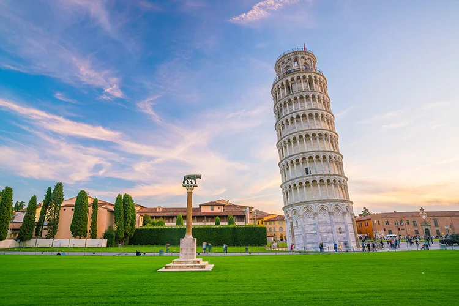
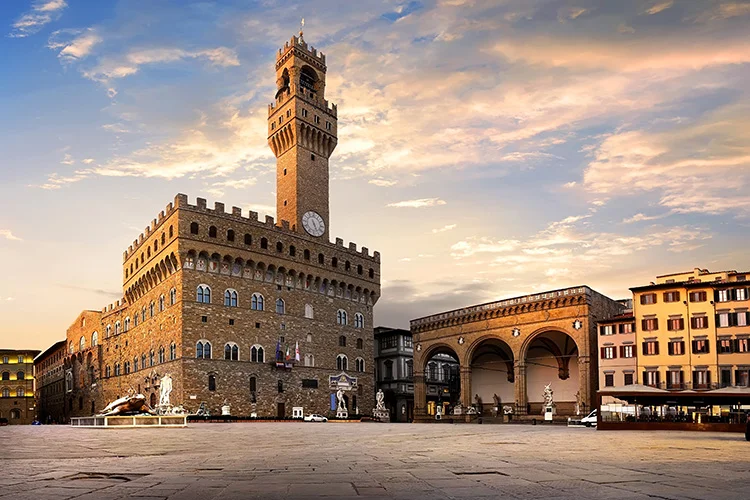
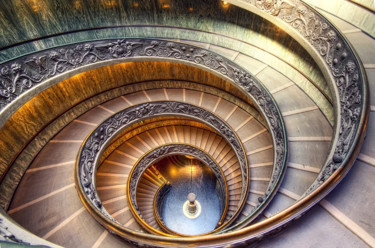

1. Hadrian’s Villa

Hadrian’s Villa, or Villa Adriana, is perhaps the best-preserved Roman villa complex in the world. Built in the early 2nd century, the villa was the central hub of power in the Roman world for the latter years of Emperor Hadrian’s reign. Hadrian’s Villa covers almost 250 acres and consists of over 30 buildings and a number of other points of interest. The site includes the remains of a large colonnaded swimming pool, libraries, the Palestra, barracks, gardens, fountains, nymphaeums, and the famous Maritime Theatre. Most intriguing of all are the remains of Hadrian’s small island retreat – including his personal toilet – which served as the Emperor’s private escape from the stress of Imperial life.
2. Leaning Tower of Pisa

The Leaning Tower of Pisa, also known as the Tower of Pisa or ‘Torre pendente di Pisa’ in Italian, is one of the world’s most famous buildings due to its leaning stance, which leaves it forever appearing to be toppling over. Originally construction of the Leaning Tower of Pisa was begun in 1174, with the intention of it being a freestanding bell tower for Pisa’s cathedral. Located in the Field of Miracles or ‘Campo del Miracoli’, the tower began to lean very early on in its construction, apparently around the time of the construction of its third floor. Today, visitors can admire the ornate white marble structure that stands 60 metres tall and climb to the top of the Leaning Tower of Pisa up a staggering 300 steps. Be aware, if you want to get up close to the tower you will need to book tickets in advance as this is undoubtedly the city’s most popular tourist destination.
3. Palazzo Vecchio

Palazzo Vecchio, translated as “Old Palace” and also known as Palazzo della Signoria, is an iconic 14th century palace in Florence most famous for its association with the Medici family. Completed in 1322, it served as the seat of the city’s governing body – a function it still fulfils today. In 1540, Palazzo Vecchio underwent a renovation campaign under the remit of Duke Cosimo I, who employed the artist Vasari to add a series of frescos depicting important Florentine events. Many of these frescos can still be seen at Palazzo Vecchio, notably in the Salone del Cinquecento which also contains a beautiful statue by Michelangelo entitled “Victory”.
4. The Doge’s Palace

The Doge’s Palace of Venice is a gothic style structure in St. Mark’s Square which served as the residence of each successive ‘Doge’ or leader of the Venetian Republic until its fall in 1797. The Doge’s Palace housed the Republic’s administrative centre, hall of justice, prison, public archive and senate house. Whilst the current Doge’s Palace was probably constructed from 1309 to 1424, it is thought that the original palace dated back to the 10th or 11th century and was probably a fortified structure protected by thick walls and guard towers, of which traces have survived. However, when Napoleon Bonaparte occupied the city – prompting the fall of the Venetian Republic – the role of the Doge’s Palace inevitably changed, and today it is a museum managed by the Venice Museum Authority.
5. Vatican Museums
